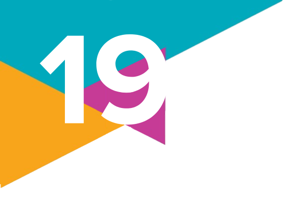

Relações de gênero
1.
(UFU-MG – 2023)
Os estudos feministas sobre a violência de gênero consideram, em especial, como um dos pilares da violência contra a mulher, o patriarcado e, de modo correlato, a posição de dominação simbólica masculina. Contudo, reconhecem que há outros elementos que compõem a dinâmica da violência. Dessa forma, o patriarcado e a dominação masculina, se tomados isoladamente, seriam causas insuficientes para se explicar a violência contra a mulher. Apesar das fragilidades que ambos os conceitos apresentam na sociedade contemporânea, bem como das críticas que lhes são atribuídas, ainda assim trazem consigo significados e desdobramentos importantes para que se possa compreender a manutenção dos ordenamentos familiares, uma vez que não está rompida a máxima: "em briga de marido e mulher, ninguém mete a colher". Se a luta do movimento feminista torna pública a violência sofrida pelas mulheres, no sentido de reconhecê-la como problema que envolve a sociedade em geral, o poder familiar ainda a silencia.
Conforme o texto, a violência de gênero envolve:
a) a hegemonia masculina, entendida como definidora de uma hierarquia de gênero no interior da família.
b) a divisão dos papéis sexuais numa sociedade patriarcal, em que a violência contra mulher sempre foi visível.
c) a família patriarcal e a consequente restrição desta forma de violência ao âmbito doméstico.
d) a nova condição da mulher no mercado de trabalho, o que reforça a dissimetria entre papéis de gênero.
Os estudos feministas sobre a violência de gênero consideram, em especial, como um dos pilares da violência contra a mulher, o patriarcado e, de modo correlato, a posição de dominação simbólica masculina. Contudo, reconhecem que há outros elementos que compõem a dinâmica da violência. Dessa forma, o patriarcado e a dominação masculina, se tomados isoladamente, seriam causas insuficientes para se explicar a violência contra a mulher. Apesar das fragilidades que ambos os conceitos apresentam na sociedade contemporânea, bem como das críticas que lhes são atribuídas, ainda assim trazem consigo significados e desdobramentos importantes para que se possa compreender a manutenção dos ordenamentos familiares, uma vez que não está rompida a máxima: "em briga de marido e mulher, ninguém mete a colher". Se a luta do movimento feminista torna pública a violência sofrida pelas mulheres, no sentido de reconhecê-la como problema que envolve a sociedade em geral, o poder familiar ainda a silencia.
BANDEIRA, Lourdes Maria. Violência de gênero: a construção de um campo teórico e de investigação. Revista Sociedade e Estado, v. 29, n. 2, Maio/Agosto, 2014. (Fragmento).
Conforme o texto, a violência de gênero envolve:
a) a hegemonia masculina, entendida como definidora de uma hierarquia de gênero no interior da família.
b) a divisão dos papéis sexuais numa sociedade patriarcal, em que a violência contra mulher sempre foi visível.
c) a família patriarcal e a consequente restrição desta forma de violência ao âmbito doméstico.
d) a nova condição da mulher no mercado de trabalho, o que reforça a dissimetria entre papéis de gênero.
2.
Elabore um quadro para sistematizar as principais ideias que caracterizam as chamadas "quatro ondas" do movimento feminista. Para cada uma delas, procure situar o período e o contexto social em que aconteceu, quais eram as principais pautas e reivindicações, as principais intelectuais e suas ideias.
3.
Sojourner Truth (c. 1797-1883) nasceu como uma mulher escravizada em Nova York, e, depois de receber alguma educação da família a que pertencia, tornou-se uma pregadora pentecostal, ativa abolicionista e defensora dos direitos das mulheres nos Estados Unidos. Leia um trecho de sua fala durante a Convenção dos Direitos da Mulher, ocorrida em Ohio, Estados Unidos, em 1851, e faça o que se pede.
Aqueles homens ali dizem que as mulheres precisam de ajuda para subir em carruagens, e devem ser carregadas para atravessar valas, e que merecem o melhor lugar onde quer que estejam. Ninguém jamais me ajudou a subir em carruagens, ou a saltar sobre poças de lama, e nunca me ofereceram melhor lugar algum! E não sou uma mulher? Olhem para mim? Olhem para meus braços! Eu arei e plantei, e juntei a colheita nos celeiros, e homem alguma poderia estar à minha frente. E não sou uma mulher? Eu poderia trabalhar tanto e comer tanto quanto qualquer homem - desde que eu tivesse oportunidade para isso - e suportar o açoite também! E não sou uma mulher? [...]
O discurso de Sojourner Truth traz um elemento central abordado pelo feminismo negro, que é a intersecção entre a opressão de gênero e a racial, evidenciando a dupla discriminação sofrida pelas mulheres negras.
a) Encontre no texto trechos que evidenciem essa intersecção.
b) Como essa intersecção entre opressão de gênero e de raça pode ser observada na vida das mulheres negras contemporâneas? Apresente um exemplo tendo como base a realidade brasileira atual.
Aqueles homens ali dizem que as mulheres precisam de ajuda para subir em carruagens, e devem ser carregadas para atravessar valas, e que merecem o melhor lugar onde quer que estejam. Ninguém jamais me ajudou a subir em carruagens, ou a saltar sobre poças de lama, e nunca me ofereceram melhor lugar algum! E não sou uma mulher? Olhem para mim? Olhem para meus braços! Eu arei e plantei, e juntei a colheita nos celeiros, e homem alguma poderia estar à minha frente. E não sou uma mulher? Eu poderia trabalhar tanto e comer tanto quanto qualquer homem - desde que eu tivesse oportunidade para isso - e suportar o açoite também! E não sou uma mulher? [...]
TRUTH, S. Eu não sou uma mulher? Geledés, [s. l.], 8 jan. 2014. Disponível em: https://www.geledes.org.br/e-nao-sou-uma-mulher-sojourner-truth/. Acesso em: 1o out. 2024.
O discurso de Sojourner Truth traz um elemento central abordado pelo feminismo negro, que é a intersecção entre a opressão de gênero e a racial, evidenciando a dupla discriminação sofrida pelas mulheres negras.
a) Encontre no texto trechos que evidenciem essa intersecção.
b) Como essa intersecção entre opressão de gênero e de raça pode ser observada na vida das mulheres negras contemporâneas? Apresente um exemplo tendo como base a realidade brasileira atual.
4.
Leia o texto a seguir e faça o que se pede.
[...] esse ataque (Vila Sônia), em particular, me lembrou o caso de Realengo, que foi um massacre ocorrido em 2011, quando um ex-aluno [...] invadiu a escola armado com dois revólveres, matando 12 vítimas, e ferindo outras 22 pessoas. Uma análise do perfil das vítimas do massacre de Realengo revela que todas eram jovens estudantes do ensino médio, com idades entre 13 e 15 anos, e somente duas não eram do gênero feminino.
[...]
Em 2012, descobriu-se que o atirador de Realengo fora influenciado por uma seita masculinista, que deu origem a um fórum online [...] [e] foi deste mesmo fórum que os atiradores do Massacre de Suzano, anos mais tarde, tirariam dicas para outro crime. Nesse [...] [fórum], o atirador de Realengo era considerado como "herói".
O caso mencionado no texto evidencia uma relação entre a propagação de discursos de ódio entre jovens em fóruns da internet, a misoginia e a violência em escolas. Em um debate coletivo com a turma, identifiquem quais são os fatores que motivam ações violentas como a descrita no texto, levando em consideração o recorte de gênero.
[...] esse ataque (Vila Sônia), em particular, me lembrou o caso de Realengo, que foi um massacre ocorrido em 2011, quando um ex-aluno [...] invadiu a escola armado com dois revólveres, matando 12 vítimas, e ferindo outras 22 pessoas. Uma análise do perfil das vítimas do massacre de Realengo revela que todas eram jovens estudantes do ensino médio, com idades entre 13 e 15 anos, e somente duas não eram do gênero feminino.
[...]
Em 2012, descobriu-se que o atirador de Realengo fora influenciado por uma seita masculinista, que deu origem a um fórum online [...] [e] foi deste mesmo fórum que os atiradores do Massacre de Suzano, anos mais tarde, tirariam dicas para outro crime. Nesse [...] [fórum], o atirador de Realengo era considerado como "herói".
DAVID, J. F. O que nos falta aprender sobre atentados escolares em tempos digitais. Consultor Jurídico, [s. l.], 5 abr. 2023. Disponível em: https://www.conjur.com.br/2023-abr-05/juliana-david-falta-aprender-atentados-escolares/. Acesso em: 1o out. 2024.
O caso mencionado no texto evidencia uma relação entre a propagação de discursos de ódio entre jovens em fóruns da internet, a misoginia e a violência em escolas. Em um debate coletivo com a turma, identifiquem quais são os fatores que motivam ações violentas como a descrita no texto, levando em consideração o recorte de gênero.